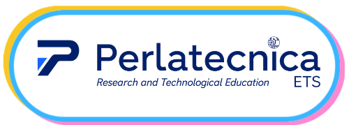

Napoli
18/06/2026
18/06/2026

FARO · Italy
Feb 2026 → Jun 2026
From FARO to the Youth AI Lab · curiosity on board.
Four workshops, February to May: spotting AI in everyday life; testing the limits of large language models through robotics and the Sustainable Development Goals; examining gender bias in AI; and turning SDG 11 into a city audit with robot sensors. More than twenty young explorers gathered at the Perlatecnica lab.
4Sessions
10hIn the lab
23Researchers
Workshops done
Four sessions within the Faro LabFeb 2026
Keep an Eye on AI.
Mar 2026
Illusion is all that matters.
Apr 2026
BIAS: Genre Matters.
May 2026
Make Cities Great Again.
01
Feb 2026
Done
Done
Keep an Eye on AI · spotting AI in everyday life.
▸
What we ran
A first session to set the baseline. The youth began by sharing what they thought AI was and where they had already encountered it. We then unpacked three simple ideas beneath the buzzword: AI systems collect data, learn from examples, and output decisions or predictions. In small groups, the youth became AI detectives, scanning everyday systems (traffic lights, apps, facial recognition, recommendation feeds, surveillance) and sorting what was truly AI from what was simple automation. We closed by drawing a clear line between fixed rules and learning algorithms.
Activity
Keep an Eye on AI, phase one
Who
High-school researchers
Mood
Curious and competitive. The groups debated intensely about whether each example truly qualified as AI.
Skills
AI literacy
observation
digital citizenship
categorisation
Best practice
At fourteen to seventeen, young people arrive with strong but mixed intuitions about AI. Starting from their own examples, then sorting them together, is what makes the boundary between automation and intelligence stick for good.
02
Mar 2026
Done
Done
Illusion is all that matters · LLM limits, robotics and SDGs.
▸
What we ran
Four steps to crack open what is really happening inside an AI. The youth started with a recent research paper on the limits of large language models, noticing that the system does not "reason"; it predicts sequences. They then met Otto, the robot that will guide the year's project, and began linking concrete robotic ideas to the United Nations Sustainable Development Goals (smart waste collection, accessibility tools). A short engineering detour compared running the "brain" locally on the robot versus in the cloud. We closed with a reinforcement-learning analogy: training a dog with treats.
Activity
Illusion is all that matters
Who
High-school researchers
Mood
Engaged and serious. The paper was dense; the group followed it more closely than the facilitators expected.
Skills
LLM literacy
reinforcement learning
robotics
SDGs
system design
Best practice
Pair an abstract concept (LLM limits, reinforcement learning) with a concrete handle (a real robot, a recent paper, an SDG). At fourteen to seventeen, young people need both ends of the bridge in the same session for the concept to land.
03
Apr 2026
Done
Done
BIAS, Genre Matters · catching the AI on assumptions.
▸
What we ran
An afternoon on bias. The youth first explored Sustainable Development Goal 5 (gender equality) through legal and economic lenses, hunting for gaps in property and marriage laws around the world. They then tested large language models with deliberately framed prompts (a story about a doctor and a nurse; "the qualities of a strong leader") and documented the system's assumptions on a Gap Analysis sheet. The technical segment used a small neural network to classify gender from height and weight, then to discover the "Human Edge": everything identity contains that a simple binary can never capture. We closed with a sticky-note feedback round.
Activity
BIAS, Genre Matters
Who
High-school researchers
Mood
Sharp and a bit indignant. They caught the AI making lazy assumptions, and called them out by name.
Skills
bias detection
prompt design
data literacy
SDG 5
classification
Best practice
Show bias both as a social fact (laws, gaps) and as a technical fact (training data, classification boundaries). At fourteen to seventeen, the two read very differently, but young people start connecting them once both are on the table in the same session.
04
May 2026
Done
Done
Make Cities Great Again.
▸
What we ran
Three steps to turn Sustainable Development Goal 11 into something concrete. The youth opened with a "City Audit": describing their commute, listing inclusivity and environmental barriers around their own neighbourhood, and mapping one local issue in pairs. They then explored the senses a robot would need to read a city: an air-quality sensor for CO2 and particulate matter, a sound sensor for noise pollution, a temperature and humidity sensor for urban heat islands. The session closed in a Python notebook, training a small neural network on simulated readings, then testing it on three scenarios (a sunny park, a traffic jam, a construction site) and reading the confusion matrix together.
Activity
Make Cities Great Again
Who
High-school researchers
Mood
Engaged and a bit indignant. The City Audit hit close to home, then the live sensor readings switched them straight into engineering mode.
Skills
sensors
urban analysis
data literacy
SDG 11
neural network
confusion matrix
Best practice
Anchor an abstract Sustainable Development Goal in their own street. At fourteen to seventeen, young people take an SDG much more seriously once they have audited their own commute against it.
Still to come
Nine workshops on the calendar23/09/2026
14/10/2026
11/11/2026
09/12/2026
13/01/2027
10/02/2027
10/03/2027
14/04/2027
12/05/2027
Monthly sessions are already on the calendar through May 2027, continuing the threads opened in the first three workshops: AI literacy, robotics, and the Sustainable Development Goals. A detailed plan for each session will be shared as it is delivered.